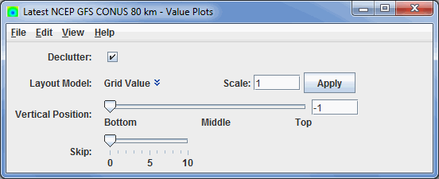
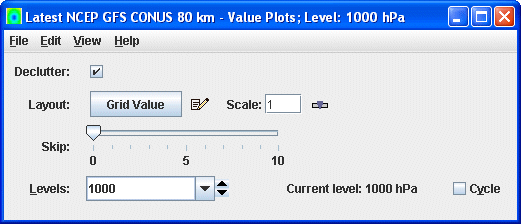

Overview
The Value Plot controls are used to adjust the display of individual grid
point values.

Image 1: 2D Value Plot Controls

Image 2: 3D Value Plot Controls
Properties
- Declutter - Displays only stations that do not overlap. When unchecked, all of the stations will be shown.
- Layout Model - Sets the layout of the displayed data. Click on the downward facing blue arrows to change the layout model. Selecting Edit will open the Layout Model Editor which will allows for creating your own custom layout model.
- Scale - Sets the size of the displayed elements. Enter a value into the field and press Enter or click Apply to scale up or down.
- Vertical Position - Sets the vertical position of the locations with respect to other variables being displayed in the Main Display window. This can be changed by using the slider, or entering a value into the field and pressing Enter.
- Skip - Sets the size of the layout model being displayed in the Main Display window. This value can be changed by using the slider.
- Levels - Lists the native grid levels. Select a level value to reset the display to that level. The level in use is shown in the data's native altitude units. The Levels box is editable. Click in the box, enter a value and hit Enter to set your own value. Additionally, a user can click on the arrows to the right of the Levels box to switch levels, or click on the Cycle check box to animate vertically through all available levels. The current level used to display the data in the Main Display window is listed next to Current level.
Menus
Many of the menu items seen utilizing this display are standard options that can be found in the Menus section of the Layer Controls page. However, there are some options that are unique to this display.
The Edit menu has these unique options:
- Levels - Represents the level where the data is displayed when displaying a 3D field.
- Selector Color - Changes the color of the selector point at the bottom left corner of the display when utilizing a 3D field.
The View menu has these unique options:
- Use Grid Projection - Re-centers the display and resets the zoom level back to the display's initial settings without changing any other preferences that have been modified.
- Enable Adaptive Resolution (Under Development) - Turns adaptive resolution on or off for the layer. This menu item is only available if adaptive resolution is enabled in the User Preferences. Note that adaptive resolution is still under development.